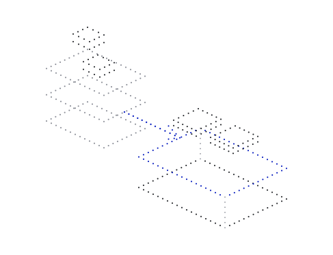

Start with the job behind the console.
An IT environment can accumulate a second environment just to manage it: agents to inspect devices, scanners to rediscover dependencies, consoles to reconcile state, and scripts to repair configuration drift. Each addition brings its own permissions, updates and operating cost.
The ManageEngine overview is a useful map of these responsibilities. Across most of that landscape, an operating-system-facing part can move into the platform. Where the platform fully fulfils a duty, the separate software bought only to perform that duty can be eliminated. The customer gets the same required outcome with fewer things to operate.

Understand what verifiability changes.
Functional verification establishes that the covered implementation satisfies stated properties, under explicit assumptions. It can establish a permitted behaviour or an isolation rule across the executions covered by the proof. That gives an operator a stronger starting point than repeatedly searching for violations after deployment.
Cryptographic verification answers a complementary question: can the identity and integrity of the software and its evidence be checked? A valid signature alone does not establish safe behaviour. Behavioural assurance and cryptographic evidence work together when the deployed system, its configuration and the properties being claimed are connected.
Background: scope of formal proofs ↗Background: platform integrity and recovery ↗
Move common control work into the foundation.
Neurulus brings a smaller operating foundation, deliberate workload authority and a common lifecycle into one platform. A workload arrives with its required services, resources and access considered together. The operating environment becomes something the team can define and reason about.
This changes the requirement for additional software. A second agent that only checks an already-enforced platform policy, or a scanner that only reconstructs dependencies the system already declares, becomes a candidate for retirement. The benefit is less duplicated control work, fewer integration boundaries and more attention available for the actual application.

Retire the tool when its job is already covered.
The strongest candidates are products or scripts whose entire role is compensating for uncertainty in the operating foundation: repeated baseline inspection, configuration repair, rediscovery of known system relationships, or reconciliation between competing views of the same state.
The decision belongs at the level of a particular duty. A broad management suite may contain both redundant platform checks and essential business functions. Map those functions individually, establish which ones the deployment fulfils, and remove the overlap. The five groups below show how that decision changes across the reference diagram.
Where the control work moves.
Reference landscape: ManageEngine’s IT-management overview ↗. The mapping below is Neurulus’s analysis of responsibilities within a supported deployment.
Service operations
Support requests, incident handling, service commitments and repeated operational work.
Service relationships, workload authority and repeatable changes can share one operating context.
Glue scripts and duplicate consoles used only to reconcile the state of services already governed by the platform.
Service ownership, customer requests, business priorities, incident judgement and agreements about the service.
Endpoint control
Software versions, device state, configuration baselines and allowed actions.
The supported system can carry an approved configuration, explicit permissions and its controlled change process together.
Separate baseline-repair or configuration-drift agents whose complete job is already enforced within the managed platform.
Decisions about new releases, hardware and firmware outside the covered boundary, and applications managed separately.
Infrastructure visibility
Dependencies, availability, resource performance and operational telemetry.
Declared system relationships and a consistent view of the operating state reduce repeated discovery and reconciliation.
Scanners and correlation jobs used only to rediscover dependencies and state that the platform already specifies and exposes.
Measurement of real latency, utilisation, failures, power and the behaviour of external infrastructure.
Security and identity
Malicious activity, identity misuse, protective controls and automated response.
Covered isolation and access properties can prevent specified violations; cryptographic checks support the identity and integrity of the system and its evidence.
Overlapping tools that only recheck those covered platform properties. Retiring broader endpoint protection requires a separate assessment of workload and threat coverage.
Identity administration, key handling, authorised misuse, application-specific threats, external incidents and recovery arrangements.
Coordination and insight
Cross-service workflows, analysis, operational tuning and relationships between events.
Workload coordination, service dependencies and resource authority can be expressed in one operating environment.
Duplicate orchestration layers or event-reconciliation rules used only to reconstruct relationships the platform already controls.
Business logic, external integrations, domain analysis and decisions about capacity and service performance.
Make the coverage boundary visible.
A proof covers specified properties. The deployment still has a boundary around its hardware assumptions, supported configurations, applications and external services. A system that prevents an unauthorised write cannot decide whether an authorised business action is wise. Cryptographic evidence also depends on sound handling of the relevant keys and identities.
Availability and performance still need observation in the real environment. Backups, recovery arrangements, business approvals and incident ownership remain operational decisions. A smaller management stack should make those decisions clearer. It should give the team evidence for which controls are already carried by the platform and which responsibilities remain elsewhere.
Measure the operating burden that disappears.
For a new deployment, evaluate the complete compute and operating environment together. For an existing estate, identify the suitable hardware and workloads first. In either case, count the agents, consoles, repair jobs and handoffs that are needed to deliver one useful business result.
Then ask what the platform allows the team to stop doing. Fewer overlapping agents, fewer repeated scans, less configuration repair and less integration glue are concrete outcomes. Neurulus earns its place when the operation gains capability and checkable confidence while carrying less software to keep that work running.
Further reading.
- MSP Central: IT-management overviewManageEnginePublisher resource ↗
- Proof statements, configurations and assumptionsseL4 FoundationPublisher resource ↗
- SP 800-193: Platform Firmware Resiliency GuidelinesNISTPublisher resource ↗
- SP 800-207: Zero Trust ArchitectureNISTPublisher resource ↗